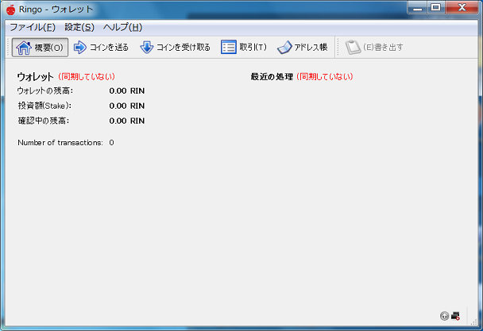
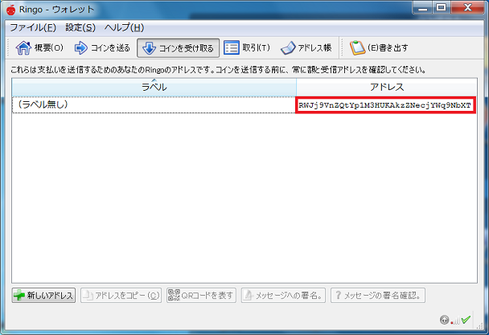
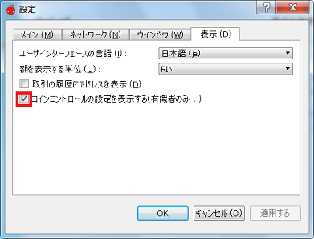
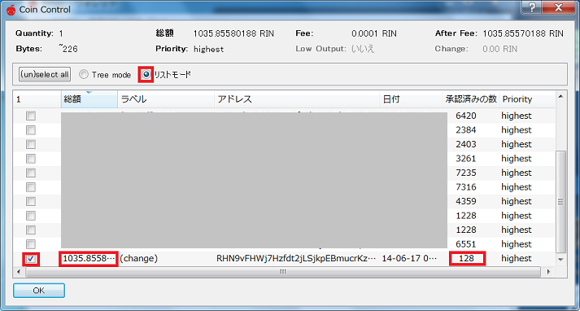
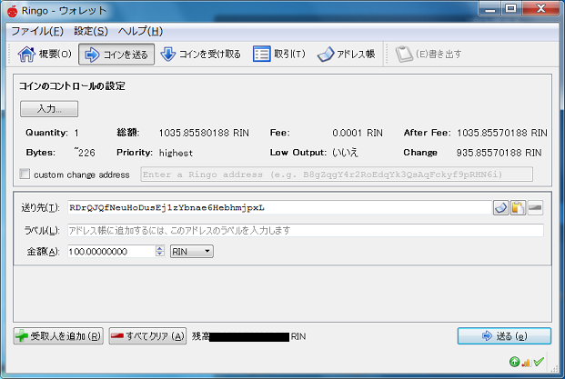

- Ringo ♥-
Ringoを始めよう！
はじめに
トップページ又は右の方にあるリンク先からウォレットをダウンロードします。
7-zipで圧縮してあるので対応した解凍ソフトで解凍してください。
解凍ができたら起動します。

ringo-qt.exeを立ち上げるとウォレットの同期が始まります。
そのまましばらくお待ちください。
「コインを受け取る」のタブをクリックするとあなたのRingoのアドレスが表示されます。

アドレスは右クリックでコピー出来ます。
Ringoの入手方法
RingoはPoWによるマイニングは終了しました。
現在の入手方法は
1) PoS採掘により入手する
Ringoはウォレットに残高があるとPoS採掘が始まり、成功するとRINが入手できます。
条件は
1 .1RIN以上保有していること
2. ウォレットに入ってから6時間以上経過
3. ウォレットに入ってから360ブロック以上経過
4. weightが1以上
PoS採掘が始まると右下の矢印のアイコンが緑色になります。
残高が多いほど、待っている期間が長いほどweightが増え、PoS採掘に成功しやすくなります。
2) 誰かから貰う
2ch.netのソフトウェア板のRingoスレでアドレスを貼ると誰かからもらえるかもしれません。
3) faucetという無料で寄付をしているサイトから入手する
.sighash.infoさんがfaucetに対応してくれました。
少額ですが、RINが入手できます。
Loginし、「Get from faucet」または「蛇口をひねる」をすればRINが得られます。
faucetは寄付によって維持されてるので、
余裕のある方からの寄付があれば多くの人がRINを入手できます。
4) 他の通貨とトレードする
Ringoは他の通貨とトレードして入手できます。
allcoin.com
monatr.jp
coinader.com
が現在Ringoに対応している取引所になります。
Ringoの送金方法
Ringoの送金は通常のコインと同じように出来ますが、
送金すると送金に選ばれたTransactionのweightが初期化されます。
weightが減るとPoS採掘成功までにかかる時間に影響が出ます。
ちょっとややこしいですが、コインコントロールの機能を使うとweight減少を抑えることが出来ます。
この機能は中級者向けです。
設定→オプション→表示でコインコントロールを表示させるようにします。

続いて、「コインを送る」タブのコインコントロールの「入力」をクリック、リストモードを選びます。

「総額」と「承認済みの数」が少ない行にチェックを入れます。

送り先にアドレスと金額を入れ、送るをクリックすると送金が完了します。(選んだ「総額」より多くは送れません)
チェックを入れたTransactionの承認済みの数が0になりますが、他のTransactionには影響ないので
weight減少を抑えることが出来ます。
本サイト及びプログラムを利用することで発生したいかなる損失・損害に対しその責任を負いません